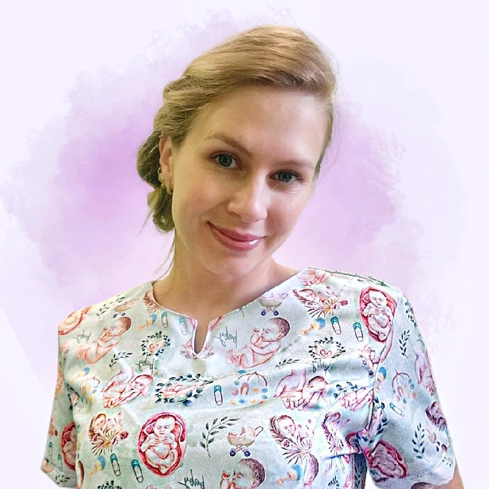
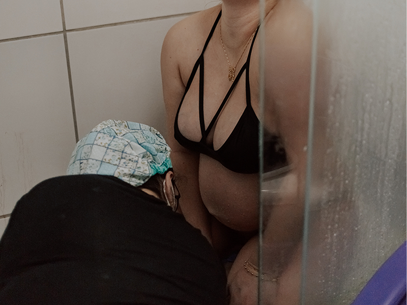
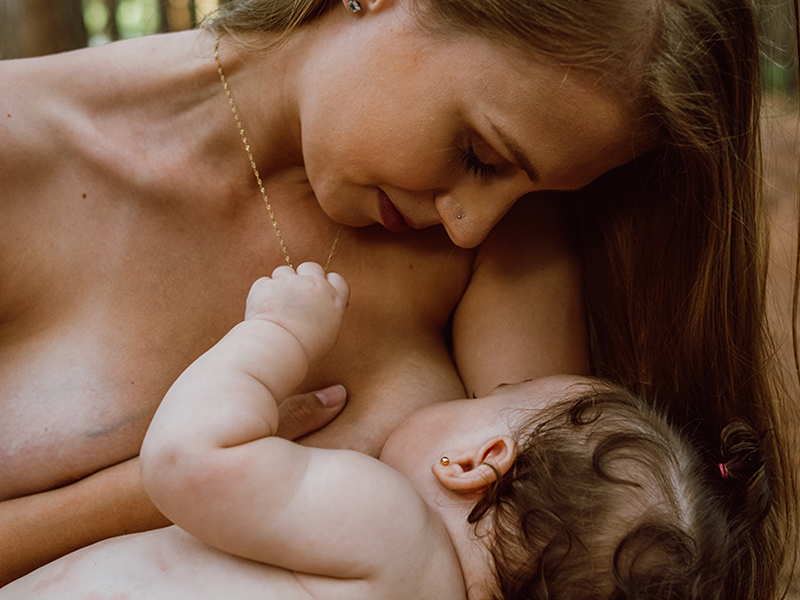
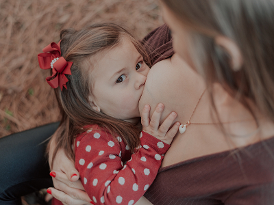
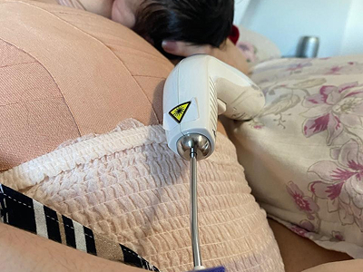

Consultoria especializada para mães que buscam apoio profissional, acolhimento e uma jornada de amamentação tranquila para o seu bebê
Agende uma consultaEnfermeira Obstetra apaixonada pelo universo materno-infantil. Com mais de 4 anos de experiência hospitalar, dedico minha carreira a oferecer suporte técnico e emocional para famílias durante o puerpério.
Meu objetivo é garantir que cada mãe se sinta segura, ouvida e capaz de nutrir seu filho da melhor forma possível, respeitando sempre a individualidade, com muita empatia, apoio acolhedor e baseado em evidências para tornar sua jornada de amamentação mais leve e prazerosa.

Sou enfermeira graduada, pela Universidade Federal de Pelotas, com especialização em ginecologia e obstetrícia, além de pós graduações em saúde materno-infantil e em consultoria em aleitamento materno.
Sou mãe de dois, já vivenciei a experiência de passar por um parto natural hospitalar e também um parto natural domiciliar, assistida por uma equipe de enfermeiras obstétricas, no conforto do meu lar.
Também vivi na pele os desafios da amamentação e estou aqui para apoiá-la em cada passo dessa jornada incrível, para transformar a amamentação em um momento de prazer e conexão entre mãe e filho.
Atualmente trabalho no hospital e também na UPA da cidade de Camaquã/RS.
Amamentar não deve doer. Identificamos a causa e corrigimos rapidamente.
Ajustes precisos de posicionamento para uma sucção eficiente e confortável.
Avaliação detalhada para garantir a nutrição ideal do seu bebê.
Segurança e orientações práticas para quem está começando essa jornada.
A consultoria para gestantes prepara os futuros pais para o nascimento do bebê, abordando temas como planejamento do parto, rotina de cuidados, amamentação e aspectos emocionais dessa fase. Esse suporte especializado proporciona mais segurança e conhecimento, ajudando a família a se organizar de forma tranquila e consciente para a chegada do novo membro.

O acompanhamento pré-hospitalar oferece suporte especializado para gestantes e mães em situações que exigem atenção antes da chegada ao hospital, proporcionando orientações seguras e acolhedoras. Esse serviço visa reduzir a ansiedade, monitorar sinais importantes e garantir que a mãe e o bebê recebam os cuidados adequados até a avaliação médica, contribuindo para uma experiência mais tranquila e segura.

A consultoria em amamentação é um serviço especializado que oferece apoio personalizado para mães, gestantes e famílias, ajudando a superar desafios relacionados ao aleitamento materno. A consultora avalia cuidadosamente a mãe e o bebê, desenvolvendo um plano baseado em evidências científicas e nas expectativas da mãe, promovendo um ambiente acolhedor e seguro para uma experiência positiva e saudável na amamentação.
A colocação do primeiro brinco em casa oferece uma experiência mais segura e tranquila para o bebê, garantindo um ambiente familiar e acolhedor. Com técnicas cuidadosas e esterilizadas, o procedimento é realizado de forma rápida e confortável, proporcionando suporte emocional e tornando o momento especial e memorável para toda a família.

O desmame é uma fase importante da amamentação e, quando feito de forma gradual, torna a transição mais natural e respeitosa para mãe e bebê. A redução progressiva das mamadas ajuda a minimizar o estresse, mantendo o vínculo emocional e permitindo adaptações conforme as necessidades do bebê. O apoio de profissionais pode garantir um processo seguro e tranquilo.

A laserterapia é uma técnica não invasiva que alivia a dor e acelera a cicatrização em mães que amamentam, sendo eficaz no tratamento de condições como ingurgitamento mamário, mastite, candidíase, edema e feridas pós-cesariana. O laser de baixa intensidade reduz a inflamação, melhora o fluxo de leite e contribui para a recuperação, proporcionando mais conforto e segurança durante a amamentação.
Contato inicial via WhatsApp para entender sua necessidade imediata e agendar o mehor horário para a visita.
Avaliação da mamada, ajuste de pega, posicionamento e orientações práticas personalizadas no conforto do seu lar.
Suporte contínuo por WhatsApp para tirar dúvidas e monitorar a evolução da amamentação nos dias seguintes.
Que tal presentear uma futura ou recém-mãe com cuidado e acolhimento? Um vale-presente de consultoria de amamentação é o gesto mais útil e carinhoso para chás de bebê ou visitas pós-parto.
Este vale-presente é um abraço em forma de cuidado, pensado para acolher, apoiar e tornar sua jornada de gestação, parto ou amamentação ainda mais especial.
Entre em contato para agendar uma consulta e vamos juntas criar momentos inesquecíveis de amor e cuidado com seu bebê.
Atendimento domiciliar em Camaquã e região.
Me siga no Instagram para mais informações e acompanhar conteúdos sobre amamentação e o universo materno-infantil.